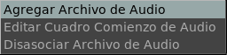
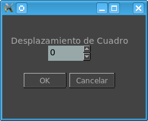

El Menú de Audio

El Menú de Audio te permite atar un nuevo audio a la película o secuencia siendo mostrada. Es util para probar, por ejemplo, sincronismo de labios en una pelicula animada.
Editar Comienzo de Audio abre una ventana para permitirte resetear el audio para que comience antes un numero de cuadros.

El Disasociar Archivo de Audio, borra el audio actualmente atado y reinstala el audio original de la película si venia con audio.